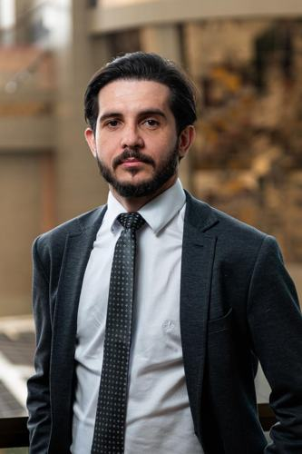
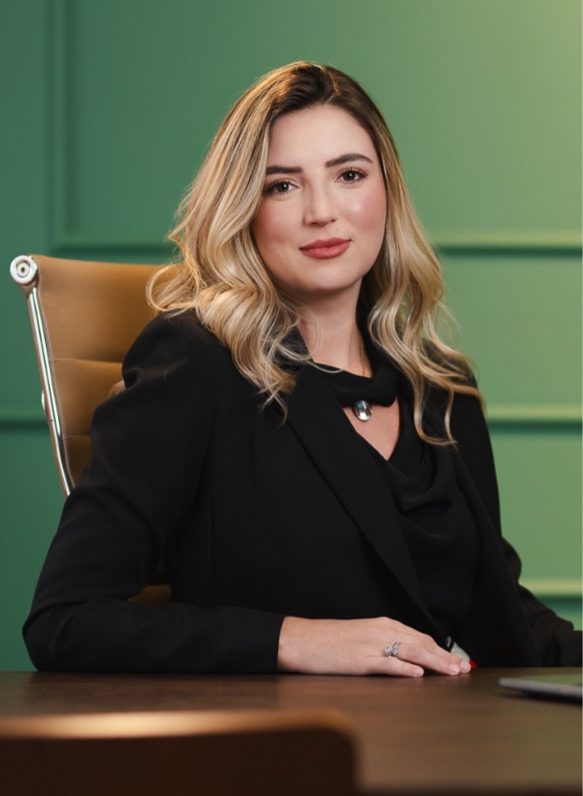
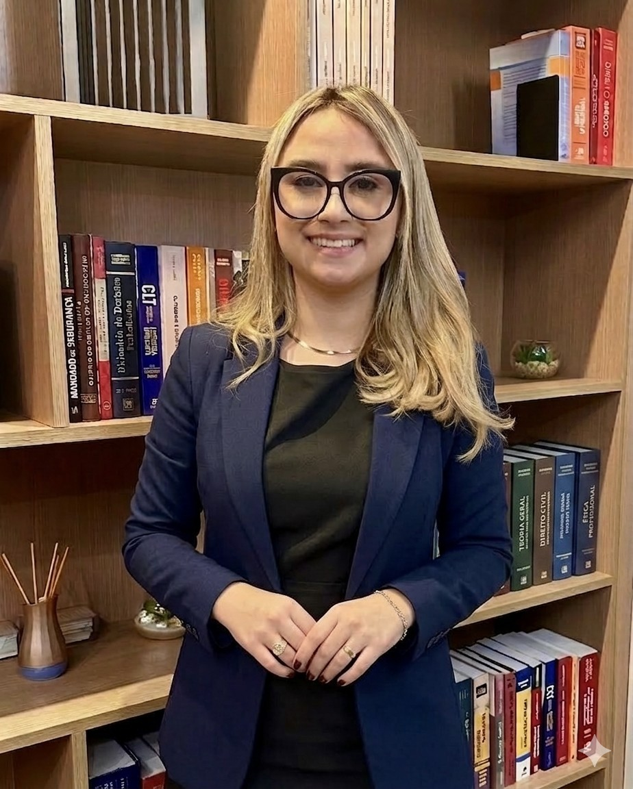

O Cotrim Advogados conta com uma equipe de advogados especializados, colaboradores dedicados e estrutura administrativa preparada para atender grandes empresas com a agilidade que elas precisam.
[ Tullio Marini Filho ]
OAB/RJ 105.393
Saber mais•
Advogado inscrito na OAB/RJ sob o nº 105.393. Graduado em Direito pela Universidade Santa Úrsula – Rio de Janeiro, em 1999. Pós-graduado e especialista em Direito do Trabalho e Direito Processual do Trabalho, Direito Civil e Direito Processual Civil e Gestão Pública. DPO (Data Protection Officer) com certificação nacional pela DeServ Academy credenciada pela EXIN.
[ Paolla Rodrigues de Almeida ]
OAB/RJ 196.406
Saber mais•
Advogada inscrita na OAB/RJ sob o nº 196.406. Graduada em Direito pelo Centro Universitário de Barra Mansa – UBM, em 2013. Pós-graduada em Direito Civil e Direito Processual Civil pelo Centro Universitário Salesiano – UNISAL/SP. Pós-graduada em Direito Digital, Compliance e LGPD pela UNINTER. Formação de Data Protection Officer, com certificação nacional pela DeServ Academy, credenciada pela EXIN. Pós-graduada em Direito do Trabalho e Direito Processual do Trabalho pela Pontifícia Universidade Católica do Rio Grande do Sul – PUC/RS, em 2026. Atualmente, cursa Certificação em Gestão Jurídica pelo IBMEC, com conclusão prevista para 2026. Integrante do Comitê de Compliance e LGPD do SINDPASS – Sindicato das Empresas de Transporte de Passageiros de Barra Mansa e Volta Redonda, atuando também como DPO da instituição. Membra da EBATS – Escola Brasileira de Atuação nos Tribunais Superiores.
[ Juliana Martins Viana Gomes ]
OAB/RJ 197.932
Saber mais•
Advogada inscrita na OAB/RJ sob o n.º 197.932. Graduada em Direito pelo Centro Universitário de Barra Mansa. Especialista em Direito do Trabalho e Processo do Trabalho, Especialista em Compliance e Relações Governamentais, Especialista em Lei Geral de Proteção de Dados e Direito Constitucional pela Universidade Legale. DPO (Data Protection Officer) com certificação nacional pela DeServ Academy credenciada pela EXIN. Possui certificação internacional em Privacy and Data Protection Essentials, Information Security Foundation based on ISO IEC 27001, Agile Scrum Foundation, Agile Scrum Product Owner e Agile Scrum Master, todos pela EXIN – Holanda. Possui cursos para atuar com Marketing Jurídico e Plataformas Digitais. Mentora no programa de Mentoria Jurídica da OAB/RJ.

[ Júlio César De Almeida ]
OAB/RJ 235.052
Saber mais•
Advogado inscrito na OAB/RJ sob o nº 235.052. Graduado em Direito pelo Centro Universitário de Barra Mansa – UBM, em 2020. Pós-graduado em Direito Civil e Direito Processual Civil pelo Centro Universitário Geraldo Di Biase – UGB, em 2023. Pós-graduado em Direito Digital Compliance e LGPD pelo Centro Universitário Internacional – UNINTER. Pós-graduado em Direito do Trabalho e Processo Trabalhista pelo Centro Universitário Internacional – UNINTER, em 2024. Concluiu o curso Compliance e Investigações Corporativas – OAB/ESA Nacional. Concluiu o curso Lei Geral de Proteção de Dados – Entendendo e Implementando – OAB/ESA Nacional. Pós-graduando em Direito Processual Civil pela PUCRS – Pontifícia Universidade Católica do Rio Grande do Sul, com previsão de conclusão em maio/2026. Integrante do Comitê de Compliance e LGPD do SINDPASS – Sindicato das Empresas de Transporte de Passageiros de Barra Mansa e Volta Redonda.
[ Fernanda Fernandes Alvim ]
OAB/RJ 248.114
Saber mais•
Advogada inscrita na OAB/RJ sob o n. 248.114. Graduada em Direito pelo Centro Universitário de Barra Mansa – UBM, em 2021. Pós-graduada em Direito do Trabalho e Processo do Trabalho pelo Centro Universitário Internacional – UNINTER. Concluiu o curso Compliance e Investigações Corporativas – OAB/ESA Nacional. Pós-graduada em Direito Digital Compliance e LGPD pelo Centro Universitário Internacional – UNINTER, em 2024.
[ Lucas Gomes Leal ]
OAB/RJ 237.960 · Advogado Parceiro
Saber mais•
Advogado Parceiro, inscrito na OAB/RJ sob o nº 237.960. Graduado em Direito pelo Centro Universitário de Barra Mansa – UBM, em 2019. Pós-graduado em Direito do Trabalho e Processual do Trabalho, em 2024 pela Faculdade Legale S.A. – São Paulo/SP. Técnico em Transações Imobiliárias pela Escola Técnica Mônaco Rio de Janeiro/RJ, em 2020. Especializado nas áreas do Direito Previdenciário e Trabalhista.
[ Wendel Roberto de Oliveira Junior ]
OAB/RJ 238.582
Saber mais•
Advogado inscrito na OAB/RJ sob o nº 238.582. Graduado em Direito pelo Centro Universitário de Barra Mansa – UBM, em 2019. Cursando Pós-graduação em Direito Digital Compliance e LGPD pelo Centro Universitário Internacional – UNINTER.
[ Sullian de Carvalho Siqueira ]
OAB/RJ 244.074
Saber mais•
Advogada inscrita na OAB/RJ sob o nº 244.074. Graduada em Direito pelo Centro Universitário de Barra Mansa – UBM, em 2020. Pós-graduada em Direito Civil e Direito Processual Civil pelo Centro Universitário Geraldo Di Biase – UGB e em Direito do Trabalho e Processo do Trabalho pela Universidade Legale Educacional. Atualmente, cursando Pós-graduação em Direito Digital, Compliance e LGPD pelo Centro Universitário Internacional – UNINTER, com previsão de conclusão em 2027.
[ Jaqueline Rezende Souza ]
OAB/RJ 257.973
Saber mais•
Advogada inscrita na OAB/RJ sob o nº 257.973. Graduada em Direito pelo Centro Universitário de Barra Mansa – UBM, em 2023. Pós-graduanda em Direito Civil e Processo Civil, pela Faculdade Legale S.A. – São Paulo/SP. Cursando especialização nas áreas do Direito Previdenciário, Direito Trabalhista e Visual Law pela Faculdade Legale S.A. – São Paulo/SP. Concluiu o curso Conciliador pelo Tribunal de Justiça do Estado do Rio de Janeiro, em 2018 e Negociação e Formação do Contrato pela Fundação Getulio Vargas (FGV), em 2022.

[ Mahe Moreira Maia ]
OAB/DF 81.552
Saber mais•
Advogada inscrita na OAB/DF sob o nº 81.552. Graduada em Direito pela Pontifícia Universidade Católica de São Paulo – PUC/SP, em 2014. Pós-graduada em Direito Processual Civil pela Fundação Getúlio Vargas, em 2018. Pós-graduada em Direito Administrativo pela Pontifícia Universidade Católica de São Paulo, em 2024. Mestranda em Direito Constitucional no Instituto Brasileiro de Ensino, Desenvolvimento e Pesquisa – IDP. Membra da Comissão de Óleo e Gás da OAB Federal, bem como da Comissão de Advocacia nos Tribunais Superiores e da Comissão de Assuntos Constitucionais da OAB/DF.

[ Isabela Cristina Botelho Nunes da Conceição ]
OAB/RJ 251.632
Saber mais•
Advogada inscrita na OAB/RJ sob o nº 251.632. Graduada em Direito pelo Centro Universitário de Barra Mansa – UBM, em 2022. Pós-graduanda em Direito do Trabalho e Processo do Trabalho pela Universidade Candido Mendes, com previsão de conclusão em 2027. Concluiu o curso de Fundamentos do Compliance Trabalhista pela Fundação Getúlio Vargas – FGV, em 2026.
[ Gislayne Santiago De Andrade ]
OAB/RJ 244.116
Saber mais•
Advogada inscrita na OAB/RJ sob o nº 244.116. Graduada em Direito pelo Centro Universitário de Barra Mansa – UBM, em 2021. Pós-graduada em Direito Digital, Compliance e LGPD. Pós-graduada em Direito do Trabalho e Processo do Trabalho. Pós-graduada em Direito Civil e Processo Civil pelo Centro Universitário Geraldo Di Biase – UGB/FERP. Aperfeiçoamento profissional por meio dos cursos Compliance e Investigações Corporativas e Lei Geral de Proteção de Dados – Entendendo e Implementando, ambos pela OAB/ESA Nacional, além do curso Legislação Trabalhista, Compliance e LGPD, pelo Instituto Brasileiro de Estudos Jurídicos.
[ Giane Santiago de Andrade ]
OAB/RJ 263.198
Saber mais•
Advogada inscrita na OAB/RJ sob o nº 263.198. Graduada em Direito pelo Centro Universitário de Barra Mansa – UBM, em 2021. Pós-graduada em Português Jurídico pela Unyleya e em Direito e Processo do Trabalho pela PUC/RS, com previsão de conclusão em março de 2026. Cursando Pós-graduação em Direito Digital, Compliance e LGPD pelo Centro Universitário Internacional – UNINTER.
[ Daniela Paschoal Feitosa Nardy ]
OAB/RJ 239.694
Saber mais•
Advogada inscrita na OAB/RJ sob o nº 239.694. Graduou-se em Direito pelo Centro Universitário de Barra Mansa – UBM, em 2021. Aperfeiçoou-se na área trabalhista por meio do curso de Cálculos Trabalhistas – PJe-Calc, realizado pelo Universo Cursos Jurídicos (INDT – Instituto Nacional de Desenvolvimento Trabalhista), ministrado por Juiz do Trabalho Substituto do TRT da 3ª Região. Também concluiu a Jornada da Advocacia Trabalhista Empresarial, ministrada pela Dra. Rafaela Sionek, além do curso de NR-1 no ambiente laboral e riscos psicossociais, ministrado pela Juíza do Trabalho Titular Monique Kozlowski. É integrante das Comissões de Direito Previdenciário, Direito Civil e Processo Civil, e Direito do Trabalho da OAB – 4ª Subseção do Rio de Janeiro.
[ Thainá da Silva Andrade ]
OAB/RJ 241.832
Saber mais•
Advogada inscrita na OAB/RJ sob o nº 241.832. Graduada em Direito pelo Centro Universitário de Barra Mansa – UBM, em 2020. Pós-graduada em Direito e Processo Previdenciário pelo Centro Universitário Internacional – UNINTER. Especializada nas áreas do Direito Previdenciário e Trabalhista.
[ Natália da Silva Fonseca ]
OAB/RJ 173.158
Saber mais•
Advogada inscrita na OAB/RJ sob o nº 173.158. Graduada em Direito pelo Centro Universitário de Barra Mansa – UBM, em 2011. Pós-graduada em Direito Previdenciário pelo Instituto Infoc – parceria OAB/VR, no ano de 2019. Pós-graduanda em Processo Civil pela Inverta Educacional – Cândido Mendes. Concluiu cursos de Direito do Trabalho pela OAB de Barra Mansa/RJ, em maio de 2025; Direito Contratual pela Fundação Getúlio Vargas, em julho de 2023; e Teoria e Prática em Direito Imobiliário pela ESA OAB/RJ, em junho de 2023.
[ Anna Flávia Souza Ribeiro ]
OAB/RJ 226261-E · Estagiária
Saber mais•
Estagiária inscrita na OAB/RJ sob o nº 226261-E. Graduanda em Direito pelo Centro Universitário de Barra Mansa – UBM, com previsão de conclusão em dezembro de 2026.